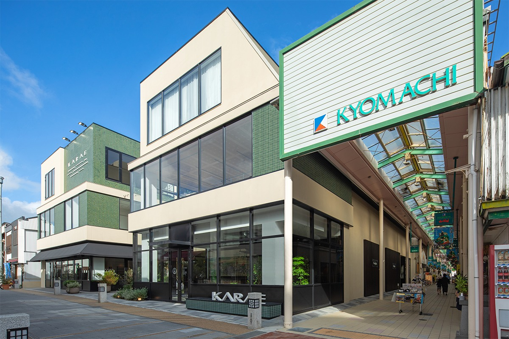
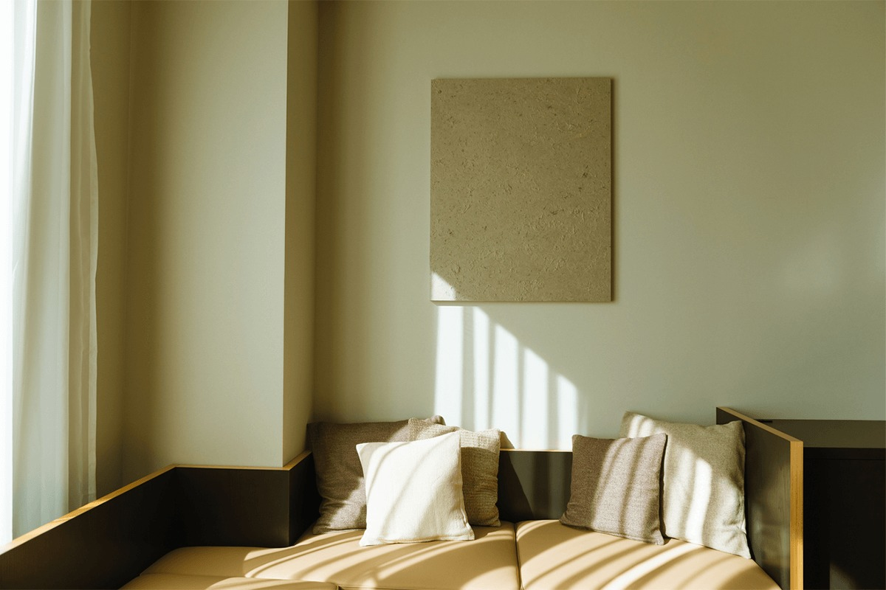
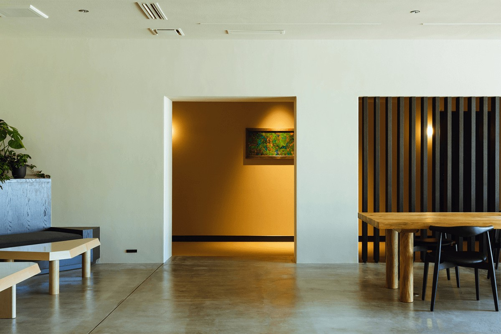
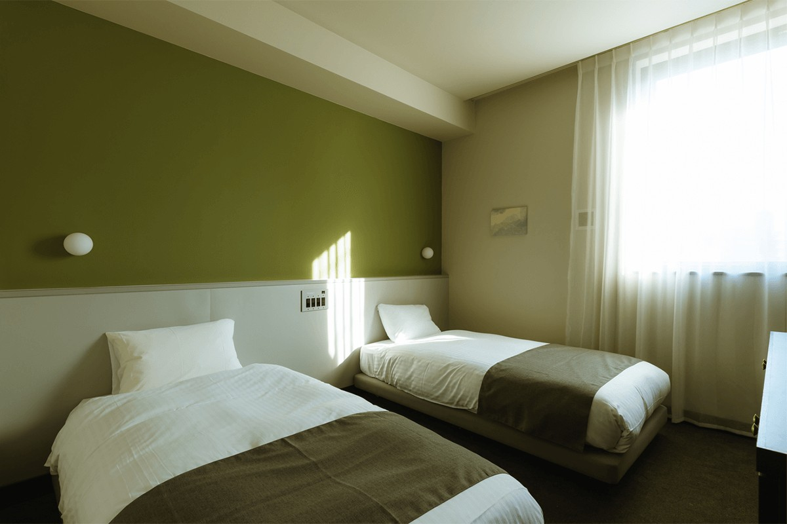
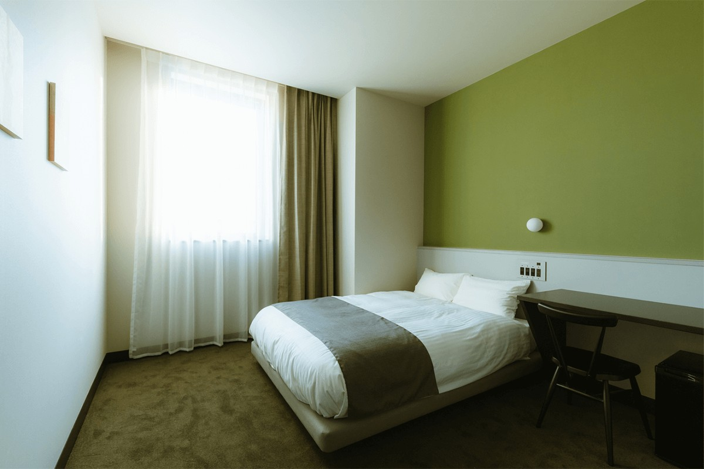
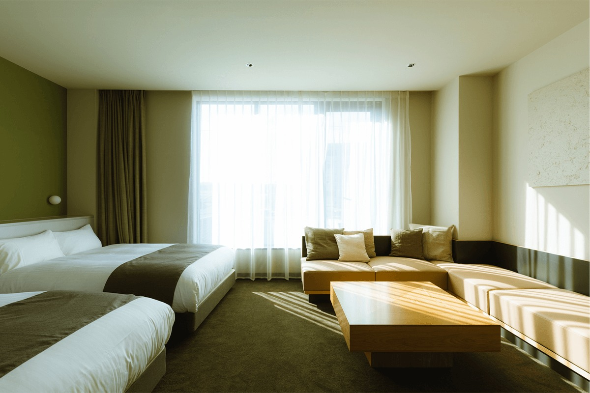
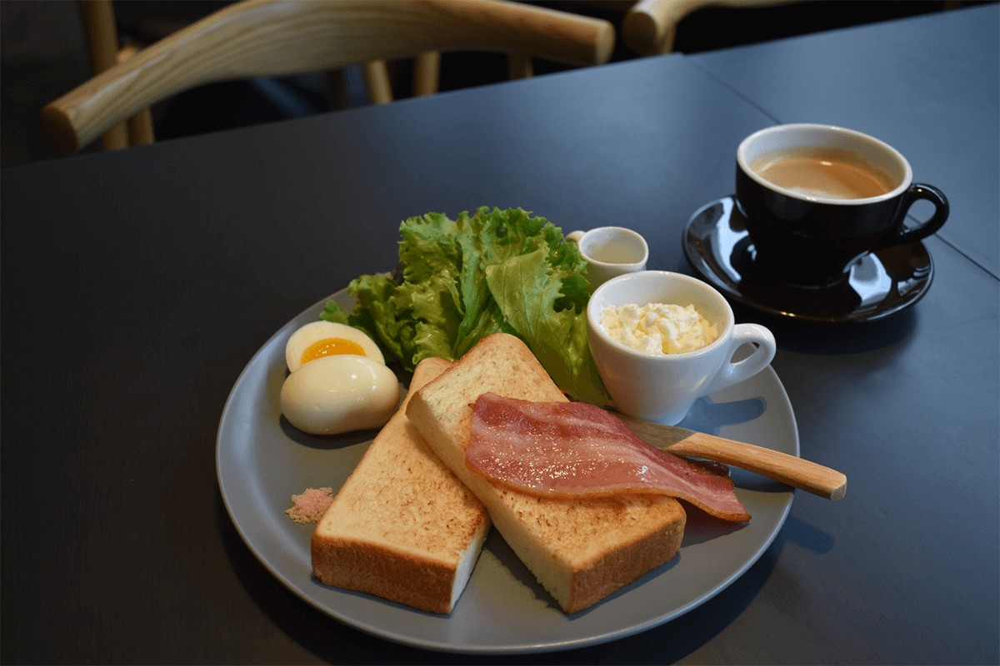
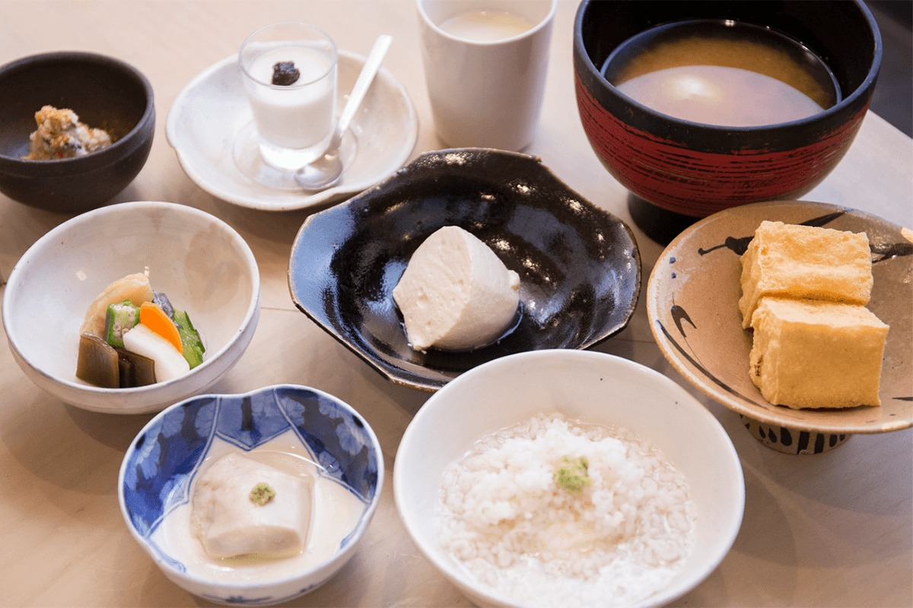
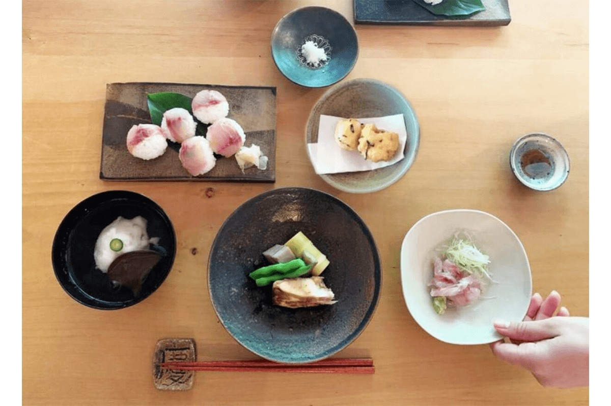

Префектура Сага · Карацу · отель
HOTEL KARAE: гостиница в Карацу из досок старой пивоварни сакэ

Карацу, старый призамковый город на севере префектуры Сага, известен сосновой рощей у моря, осенним праздником и керамикой. HOTEL KARAE стоит у самого входа в город и собран из того, чем Карацу жил последние сто лет.
Отель
Пивоварня, которая стала лаунжем
Карацу лежит на берегу залива, рядом с Нидзи-но-мацубара, длинной рощей чёрных сосен на белом песке. Город сохранил свои праздники и мастерские керамики Карацу, и HOTEL KARAE открылся там, откуда приезжие обычно начинают знакомство с ним: в торговом квартале у станции.
Отель занимает третий этаж здания KARAE. Когда-то на этом месте работала пивоварня сакэ, и её балки, доски и раздвижные двери примерно столетнего возраста не выбросили: из них сделали панно в лаунже и большой общий стол.

Хозяева задумывали отель как место, которое бережёт традиции города и при этом приносит в него что-то новое. Себя они называют «портом» Карацу: отсюда гости расходятся по городу, каждый своим маршрутом.

Номера
Матрасы Simmons и бумага из Нанаямы
В номерах нет нарочитой экзотики, но приметы Карацу видны сразу. На стенах висят листы бумаги васи, которую вручную черпает мастерская «Камисуки сикосицу» из Нанаямы, горного района Карацу. Матрасы на кроватях от Simmons.
Стандартный номер с двумя кроватями рассчитан на двоих и занимает 18 м². Улучшенный номер с одной двуспальной кроватью немного меньше, 17 м².


Для семьи или компании подойдёт номер делюкс площадью 36 м² с двумя двуспальными кроватями и окнами на переулки торговой улицы. Он рассчитан на двоих, но в нём могут жить до шести человек: с третьего гостя в 2021 году доплата составляла 3300 иен с человека. В номерах делюкс и экзекьютив на матрас кладут ещё перьевой топпер толщиной 3 см, чтобы спалось мягче.

Кроме этих номеров в отеле есть стандартный двухместный с двуспальной кроватью, экзекьютив и общий номер с отдельными спальными местами.
Завтрак
Тосты внизу или тофу напротив
Завтрак можно взять в KARAE TABLE, кафе на первом этаже того же здания. Классический набор: толстый тост со взбитым маслом собственного приготовления и напиток. Ради этого масла многие возвращаются. Яйца берут на местной ферме «Минори», где кур держат на свободном выгуле и кормят своим кормом, а молоко у марки «Мураяма», которой около ста лет. За доплату тост можно заменить французским тостом или смузи с фруктами и мёдом.

Терраса кафе выходит на торговую улицу, зал просторный и тихий, и с полок можно брать книги. Завтраки подают с 7:30 до 10:00.
Второй вариант находится прямо напротив отеля. Лавке «Кавасима тофу» около двухсот лет, и её считают родиной дзару-тофу, нежного тофу, который откидывают в бамбуковую корзинку. Лавка попала в гид «Мишлен», а её тофу давно закупают рестораны Гиндзы в Токио и традиционные рестораны Киото.

Утром здесь подают только что приготовленный тофу. В завтрак входят соевое молоко, обжаренная окара, кунжутный тофу, дзару-тофу, жареный тофу ацуагэ, мисо-суп, удзуми-тофу, соленья и десерт. Хрустящий ацуагэ и дзару-тофу можно добирать сколько хочется. За доплату к завтраку добавляют сасими или жареную рыбу, а меню меняется по сезону. Лавка стоит под крышей торговой галереи, так что дойти до неё можно и в дождь.
Ужин
Урок кулинарии у мастерской керамики
По субботам в 2021 году отель предлагал программу для одной компании в день. Гостей везли в Хамадаму, тихий район Карацу у гор с чистой водой, где работает мастерская керамики Карацу «Юкико-гама». По соседству с ней находится ресторан «Робата».

Урок ведёт муж хозяйки мастерской. Блюда здесь простые, но приготовленные всерьёз, так, чтобы раскрыть вкус продуктов. После урока приготовленное едят из посуды, которую сделала сама хозяйка «Юкико-гама». В программе участвует только одна группа, от двух до шести человек, поэтому за столом остаются только свои.
Программа начиналась в 16:00 с переезда в «Робата» и урока, ужин шёл примерно с 18:00 до 19:00. Заявки принимали от двух человек, а за доплату можно было добавить роспись керамики.
HOTEL KARAE
- Адрес
- префектура Сага, Карацу, Кёмати, 1783, здание KARAE, 3-й этаж
- Телефон
- +81 955-53-8068
- Заезд / выезд
- заезд 15:00–23:00, выезд до 10:00
- Цены / Вход
- общий номер от 4400 иен, отдельный номер от 6600 иен за ночь, с налогом
- Сайт
- hotelkarae.com